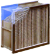

2022年
問題75 空気浄化装置に関する次の記述のうち，最も不適当なものはどれか．
（1）自動巻取型エアフィルタは，ろ材の更新が自動的に行えるような構造としたものである．
（2）ULPAフィルタは，定格風量で粒径が0.3μmの粒子に対する粒子捕集率で規定されている．
（3）ろ過式フィルタの捕集原理には，遮りによる付着，慣性衝突，拡散による付着がある．
（4）ガス除去用エアフィルタのガス除去容量は，ガス除去率が初期値の85%に低下するまでに捕集したガス質量で表される．
（5）パネル型エアフィルタは，外気用又はプレフィルタとして用いられる．
2022年
問題75 正解（2） 頻出度AAA
JIS Z8122で，ULPAフィルタは，「定格流量で粒径が0.15μmの粒子に対して99.9995%以上の粒子捕集率をもち，かつ初期圧力損失が245Pa以下の性能をもつエアフィルタ」とされている．0.3μmはHEPAフィルタである．（2022-75-1表参照）
2022-75-1表 エアフィルタ
| 分類 | 形式 | 用 途 | ろ材 | 捕集性能 | 圧力損失［Pa］ | ||
| 粒度 | 捕集率(%) | 初期値 | 終期値 | ||||
| 粗じん用エアフィルタ | パネル型 袋型 折込み形 自動巻取形 |
外気用プレフィルタ | 合成繊維 不織布 ガラス繊維 |
やや粗粒 | 60以上 | 20 | 200 |
| 中性能エアフィルタ | 折込み形 袋形 |
一般空調用 クリーンルーム用中間フィルタ |
ガラス繊維 合成繊維 ろ紙 |
やや微細 | 0.4μm 30以上 |
50 | 300 |
| 0.7μm 50以上 |
|||||||
| HEPAフィルタ | 折込み形 | 工業用 バイオクリーンルーム 原子力・放射性同位元素施設排気浄化装置 |
ガラス繊維 ろ紙 |
極微細 (0.3μm) |
99.97以上 | 100 | 500 |
| ULPAフィルタ | 極微細(0.15μm) | 99.9995以上 | 100 | 500 | |||

出典
国立研究開発法人 日本原子力開発機構 原子力科学研究所
https://www.jaea.go.jp/04/ntokai/backend/backend_01_02_09.html
エアフィルタの捕集作用はさえぎり，慣性，拡散などの作用による．用途に合わせて幅広い粒子捕集率の製品が開発されている．
自動巻取形エアフィルタのろ材の更新は，タイマによる方法と圧力損失を検知して行う方法の2通りが採用されている．
ガス除去用エアフィルタとしては，吸着剤フィルタ，吸着剤や不織布ろ材に触媒などを添着したもの，イオン交換繊維などが使用される．
吸着剤フィルタは，シリカゲル，アルミナゲル，活性炭などの吸着剤によって有害ガスを吸着除去する．
ガス除去用エアフィルタは，活性炭に除去対象により異なる添加物を加えたものが多い．活性炭は，多種多様のガスに対して，物理吸着あるいは化学吸着による幅広い吸着能力をもち，特にガス濃度が非常に低い場合でも有効である．
エアフィルタの性能は，定格風量時における汚染除去率，圧力損失，汚染除去容量で示される．
汚染除去率（次式参照）は，空気浄化装置の上流側に流入する汚染物質が，空気浄化装置により除去される割合．次式で求められる．粉じん除去の場合は粉じん捕集率，有害ガス除去の場合はガス除去率という．
エアフィルタの粉じん捕集率の測定方法には，質量法・比色法・計数法(個数法)があり，除去する粉じんの径と捕集率によって使い分けられる．同じフィルタにこれらの測定方法を適用すると，使用する試験ダストの粒径が異なるため捕集率は異なった数値となる．
質量法は，プレフィルタ等の粗じん用フィルタの性能表示に使用される．
比色法は，中性能フィルタの性能表示に使用される．光散乱積算法は，比色法に相当するものとしてJISで定められ，中程度の濃度・粒径の粒子除去を目的とした中高性能フィルタユニットは，ほとんど全てこの試験方法が適用される．
計数法(個数法)は，高性能フィルタの性能表示に使用される．試験フィルタの上流及び下流側の空気を吸引して，光散乱式計数機で粒子の個数を測定する．したがって，粉じん捕集効率は個数比で表される．
汚染除去容量は，空気浄化装置が使用限度に至るまでに保持できる汚染物質の量で示される．粉じんの除去の場合は粉じん保持容量，有害ガス除去の場合はガス除去容量という．
粉じん保持容量は，一般に圧力損失が初期値の2倍となるまで，最高圧力損失値になるまで，あるいは粉じん捕集率が規定値の 85%に低下するまでに捕集される粉じん量［kg/m2，又はkg/個］として示される．ガス除去容量は，ガス除去率が規定値の85%に低下するまでに捕集される有害ガスの重量として示される．
フィルタ等の汚染除去容量を超えて使用すると，粉じんなどの再飛散を引き起こす．
静電式(電気集じん器)は，高圧電界によって粉じんに荷電し，静電気力によって吸引吸着する．2段荷電型の例を2022-75-2図に示す．
電気集じん器は圧力損失が小さく，たばこ煙などに含まれる微細な粉じんまで効率よく捕集できる．